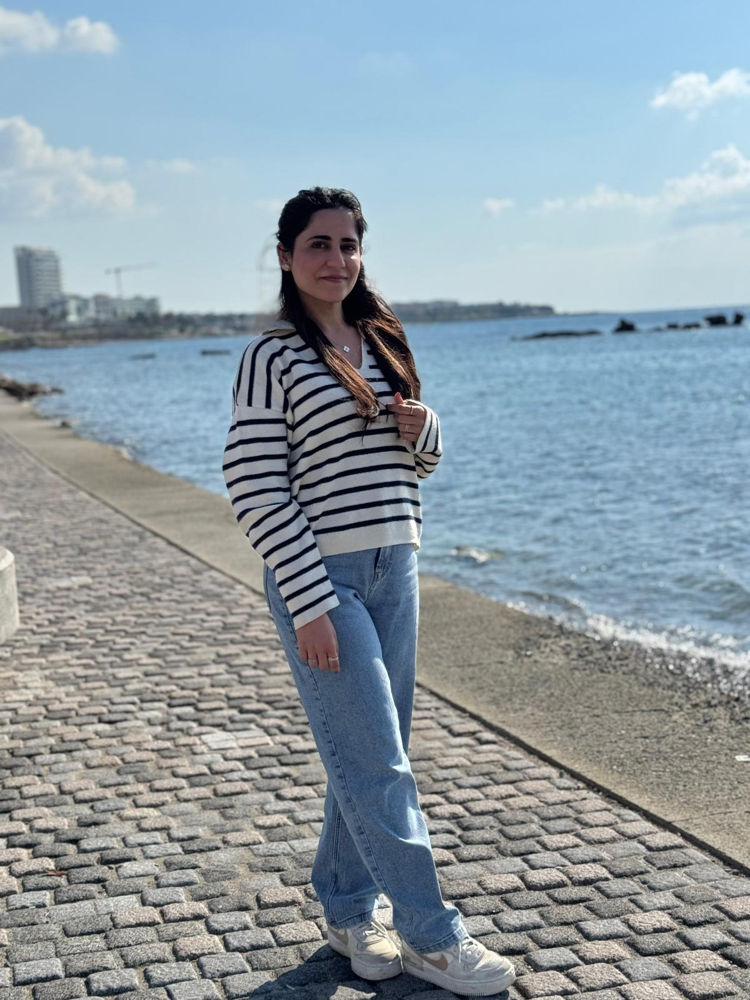

Technical Foundation
Building skills in Windows troubleshooting, networking, Python, HTML, and CSS through coursework and practice.

HI, I'M FAIZA.
Follow my path from healthcare into Information Technology, explore the technical projects I’m building, and see how my experience in documentation, cross-functional teamwork, and attention to detail supports my future in tech.
WHAT I BRING
Building skills in Windows troubleshooting, networking, Python, HTML, and CSS through coursework and practice.
Careful documentation, organized work, and a thoughtful approach to solving problems.
Listening to people, explaining steps clearly, and working with others to find solutions.
“The most important thing is to try and inspire people so that they can be great in whatever they want to do.”
Kobe Bryant
I am actively seeking IT opportunities and always eager to connect with technical teams.
Get in touch